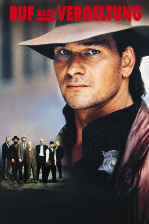
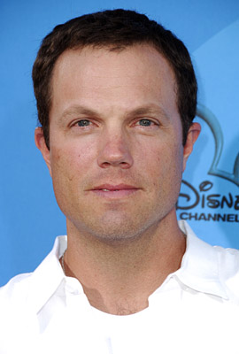

#10290 Ruf nach Vergeltung
Alternativ: Next of Kin (Englischer Titel)
 
 IMDB-Wertung: 5.8 / 10
IMDB-Wertung: 5.8 / 10  Metascore: 0
Metascore: 0 
Der aus Kentucky stammende Truman verdingt sich als Polizist in Chicago. Als sein Bruder Gerald von dem Gangster Joey Rosselini getötet wird, kommt ein weiterer Bruder Trumans, Briar in die Stadt, um den Mord zu vergelten. Truman kann ihn von illegalen Schritten abhalten. Doch als nach gemeinsamen Recherchen auch Briar von der Hand Joey Rosselinis, der zuvor den Sohn des Paten John Isabella umgebracht hat und den Verdacht auf Briar lenkte, stirbt, legt Truman die Dienstmarke ab. Unterstützt von seinem Familienclan aus den Bergen stellt er die Verbrecher auf einem Friedhof. Rosselini stirbt aber von der Hand des Paten, der den Tod seines Sohnes rächt.
Jahr: 1989
Dauer: 103 Minuten
FSK: 16
Land: USA Studio: Warner Bros.Tonspuren:
Untertitel:
Auflösung: 1080p (1920x1080) Größe: 4485 MB
Genre: Action, Thriller, Krimi
Regisseur: John Irvin
Drehbuch: Michael Jenning
Soundtrack: Jack Nitzsche
Darsteller:
 Patrick Swayze als Truman Gates
Patrick Swayze als Truman Gates Liam Neeson als Briar Gates
Liam Neeson als Briar Gates-  Adam Baldwin als Joey Rosselini
 Helen Hunt als Jessie Gates
Helen Hunt als Jessie Gates Andreas Katsulas als John Isabella
Andreas Katsulas als John Isabella Bill Paxton als Gerald Gates
Bill Paxton als Gerald Gates Ben Stiller als Lawrence Isabella
Ben Stiller als Lawrence Isabella Michael J. Pollard als Harold
Michael J. Pollard als Harold Ted Levine als Willy Simpson
Ted Levine als Willy Simpson Del Close als Frank
Del Close als Frank- Valentino Cimo als Rhino
- Paul Greco als Leo
- Vincent Guastaferro als Paulie
 Paul Herman als Tony Antonelli
Paul Herman als Tony Antonelli- Richard Wharton als Selkirk
- Michael Wise als Snakeman
 Michael Sassone als Melvin
Michael Sassone als Melvin Neil Giuntoli als Shorty
Neil Giuntoli als Shorty- Tim Quill als T.V. Reporter
- Sally Murphy als Hooker
- Elizabeth Ruf als Woman in Bar
- Lisa Niemi als Violinist (uncredited)
- Don Herion als Zimmer
- Don James als David Jenkins
- Brett Hadley als De Witt
- Rodney Hatfield als Hollis
- Kelly Blair als Tolbert
- Charles Williams als Pierce
- Joseph R. Ryan als Grandpa
- Anndrena Belcher als Patsy-Ruth
- Jean Ritchie als Charlene
- Nancy Jeffrey als Aunt Peg
- Tina Engle als Rosalie
- Kimberly Cole als Hollis' Wife
- Starla Fugate als Gerald's Girl Friend
- Fred Crowther als Old Hillbilly
- Billy Branch als Preacher
- Celene Evans als Lady Bartender
- Michael Dizonno als Vinny
- Jack Kandel als Hillbilly Bartender
- Mark Roberts als Furniture Mover
- Patrick Balch als Young Boy (Kentucky)
- Relioues Webb als Young Boy (Chicago)
- Arlene Lencioni als Mrs. Isabella
- Lew Way Chin als Violin Student
- Morgan Biscomb Melto als Violin Student
- Al Neal als Man in Bar
- Joelle Pasquale als Daughter #1
- Mia Ferro als Daughter #2
- Keela Gootee als Daughter #3
Datei: X:\1989\Ruf nach Vergeltung (1989, FSK16, 1920x1080).mkv seit 29.12.2018
Festplatte: HD 1987-1991
 Es gibt insgesamt 54 Filme in der Gruppe '1989'
Es gibt insgesamt 54 Filme in der Gruppe '1989'